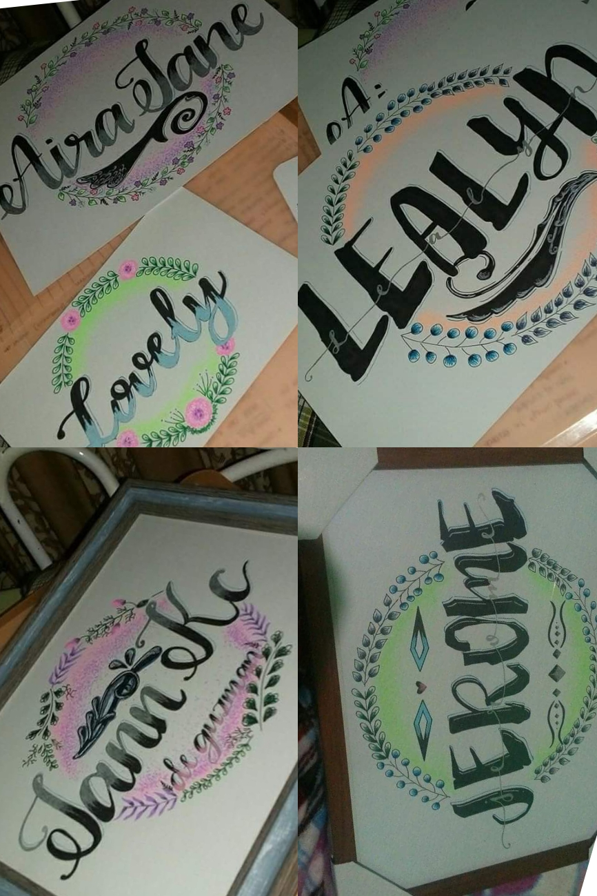

Art is an expression of our thoughts, emotions, and desires, but it is even more personal than that: it’s about sharing the way we experience the world, which for many is an extension of personality. When I was in high school i loved to draw or make different crafts. I’m a self-taught artist I am not very good but I am happy when I can make different artworks. It’s just like this digital art, I’ve only learned of it since the pandemic started. I only use materials are my finger and mobile phone. I take a long time to finish a digital art. But when the online class started I couldn't create this kind of art again because I focused more on the class. I will still do it when I have free time.
These are another kind of my artworks. There is traditional art that I use pencil and paper and most of my work is not finished. I also try painting and watercolor using different acrylic colors, brushes and paper but that doesn't seem to be for me. I also tried to sell calligraphy when I was in Senior high school. I was happy then because I was able to sell somehow. All the money I earned, I used to buy various equipment for my business. The ones I used here in this artwork were pens, vellum boards and sometimes frames. My business stopped because I was graduating then but I will not stop loving and creating different kinds of art.
